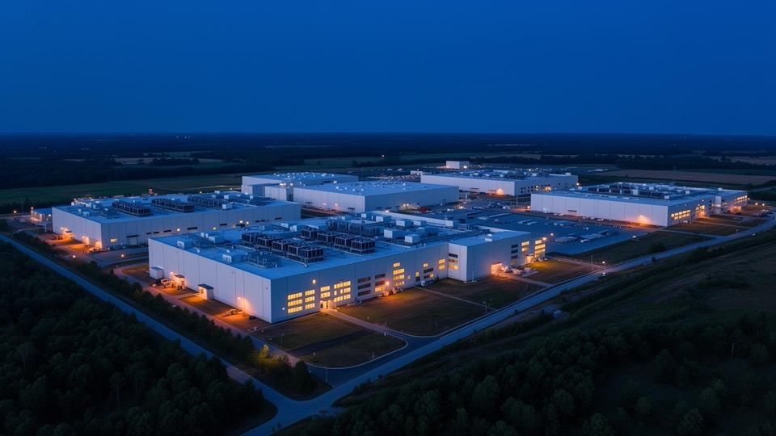

Our Expertise
From first site visit to live operations, we find the leaders and specialist talent behind every stage of a data center and AI infrastructure build.
We specialise in executive search and leadership hiring across every stage of the build. Every step needs someone accountable for it, from the development director securing the site to the operations leader keeping it live, and we find the people who own each stage and the leaders who run the whole programme.

Finding the land, securing power and permits, and building the business case that shapes everything after it.
AI campuses: Power is the constraint, so sites are chosen for gigawatt scale grid access.
Turning the concept into a buildable facility, and ordering long lead equipment early enough to protect the programme.
AI campuses: Far higher rack densities, with liquid cooling designed in from day one.
Choosing contractors and the supply chain, and locking in delivery slots in a market where everything is in short supply.
AI campuses: GPUs, cooling and power equipment on allocation, not off the shelf.
Delivering the shell and the electrical and mechanical fit out safely, on time and on budget.
AI campuses: Compressed programmes, with capacity live in months, not years.
Testing every system, stage by stage, to prove the facility performs before anything goes live.
AI campuses: Liquid cooling and high density loads that most teams have never tested.
Handing over to operations, onboarding tenants and keeping uptime high, then planning the next phase.
AI campuses: GPU clusters that need a different kind of operations team.
Whichever side of the table you're on, we know the data center and AI infrastructure market better than anyone.